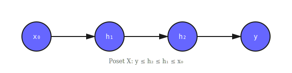
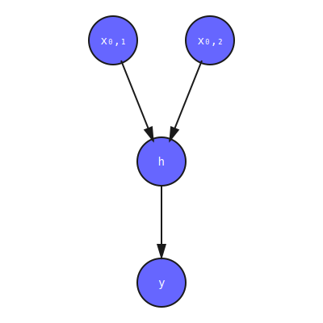
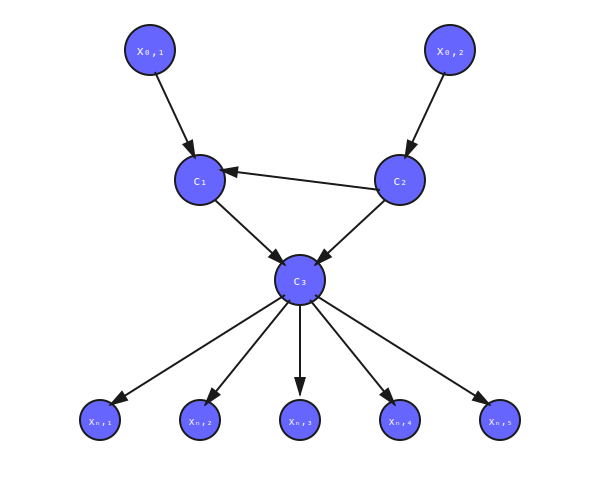

Neural Networks Are Functors
A Categorical Foundation for Deep Learning
Following Marcolli & Manin, a directed finite graph is a functor:
DirectedGraph : Type
DirectedGraph = Functor ·⇉· FinSetsThe parallel arrows category ·⇉· has:
- Two objects:
false(edges),true(vertices) - Two non-identity morphisms:
source : false → true,target : false → true
A functor G : ·⇉· → FinSets maps this to:
vertices : DirectedGraph → Nat
vertices G = G.F₀ true
edges : DirectedGraph → Nat
edges G = G.F₀ false
source : (G : DirectedGraph) → Fin (edges G) → Fin (vertices G)
source G = G.F₁ true
target : (G : DirectedGraph) → Fin (edges G) → Fin (vertices G)
target G = G.F₁ falseThis is the complete data of a directed graph: vertices, edges, and their incidence relations.
Why Functors?
Category theory provides the right language for composition. Neural networks compose:
- Sequentially: Chain layers end-to-end
- In parallel: Process multiple branches
- With feedback: Recurrent connections
The functor perspective makes this precise. Given graphs \(G_1, G_2\), we want to graft them together. But naive concatenation breaks—what if they share vertex labels?
Solution: Network summing functors \(\Sigma_C(G)\) (Marcolli & Manin, Section 2).
Network Summing Functors
The category \(\Sigma_C(G)\) has:
- Objects: Subsets \(S \subseteq V(G)\) of vertices
- Morphisms: \(S \to T\) iff \(S \subseteq T\) and connections respect the graph structure
This captures the conservation laws of neural computation:
Proposition 2.10 (Kirchhoff's Law): Network summing functors arise as equalizers:
\[ \Sigma_C(G) = \text{Eq}\left( \prod_{v \in V} C(v) \rightrightarrows \prod_{e \in E} C(e) \right) \]
The two arrows are:
- \(s^* : \prod_v C(v) \to \prod_e C(e)\): Pull back along source
- \(t_* : \prod_v C(v) \to \prod_e C(e)\): Push forward along target
Equalizing means: incoming = outgoing (conservation).
Semiring Homomorphisms and Evaluation
Neural networks form a categorical algebra. Since we have:
- Sequential composition: A monoidal structure \((G_1, G_2) \mapsto G_1 \circ G_2\)
- Parallel composition: A tensor \((G_1, G_2) \mapsto G_1 \otimes G_2\)
- Identity networks: Units for composition
This gives a semiring structure on network architectures.
Key insight: Any semiring homomorphism
\[ \phi : \text{Networks} \to \mathbb{R} \]
provides an evaluation semantics.
Examples:
- Parameter count:
params(G₁ ∘ G₂) = params(G₁) × params(G₂) params(G₁ ⊗ G₂) = params(G₁) + params(G₂) - Computational cost (FLOPs)
- Information flow (mutual information)
- Resource consumption (energy, memory)
Because these are homomorphisms, they:
- Compose correctly: \(\phi(G_1 \circ G_2) = \phi(G_1) * \phi(G_2)\)
- Scale linearly: \(\phi(G_1 \oplus G_2) = \phi(G_1) + \phi(G_2)\)
- Preserve units: \(\phi(\text{id}) = 1\)
Example Architectures
1. Simple MLP (Chain)
-- Chain network: x₀ → h₁ → h₂ → y
-- No convergence, no forks needed
-- Poset X: y ≤ h₂ ≤ h₁ ≤ x₀ (total order)The summing functor \(\Sigma_C(G)\) has objects:
- \(\emptyset, \{x_0\}, \{h_1\}, \{h_2\}, \{y\}\)
- All subsets respecting the order
2. Convergent Network (ResNet-like)
-- Two branches converging:
-- x₀,₁ x₀,₂
-- ↓ ↓
-- └──→ h ←──┘ (convergence!)
-- ↓
-- yFork construction (Belfiore & Bennequin, Section 1.3):
Hidden layer \(h\) has 2 inputs → add fork:
- Fork star \(A^★\): Join point for incoming edges
- Fork tang \(A\): Transmission point
- Edges: \(x_{0,1} \to A^★ \leftarrow x_{0,2}\), then \(A^★ \to A \to h\)
After removing \(A^★\), the poset \(X\) has structure:
x₀,₁ ← A → x₀,₂ (tang A is the join)
↓
h
↓
yOrdering:
- \(y \leq h \leq A \leq x_{0,1}\)
- \(y \leq h \leq A \leq x_{0,2}\)
This is a diamond poset—the archetypal residual connection.
3. Complex Multi-Path Network
Multiple convergence points → multiple forks. The poset \(X\) becomes a tree forest:
Theorem 1.2 (Belfiore & Bennequin): The poset \(X\) of a DNN is made by a finite number of trees, rooted in the maximal points (inputs/tangs) and joined at the minimal points (outputs/tips).
The DNN Topos
Each architecture defines a Grothendieck topos:
\[ \text{DNN-Topos} = \text{Sh}[X, \text{Alexandrov}] \]
Where:
- \(X\) is the fork poset (from the architecture)
- Alexandrov coverage: each \(x \in X\) has one covering sieve (maximal sieve \(\{y \mid y \leq x\}\))
- Sheaves \(F : X^{op} \to \text{Sets}\) assign data to layers, with restriction maps
Sheaf condition at convergent vertex \(A^★\):
\[ F(A^★) \cong \prod_{a' \to A^★} F(a') \]
This encodes the independence of incoming branches—states at \(A^★\) are products of states at tips.
Backpropagation becomes flow of natural transformations \(W \to W\) (weight update):
Theorem 1.1: Backpropagation is the cooperative sum over directed paths:
\[ \frac{\partial L}{\partial w_a} = \bigoplus_{\gamma_a \in \Omega_a} \phi_{\gamma_a} \]
where \(\Omega_a\) is the set of directed paths from vertex \(a\) to outputs.
Technical Note: HITs Without K
In cubical Agda, proving path uniqueness for indexed types requires the K axiom (disabled by default).
Standard approach: Define paths, then prove uniqueness separately.
Problem: Pattern matching on indexed constructors triggers:
Cannot eliminate reflexive equation x = x of type X-Vertex
because K has been disabled.Our solution: Encode uniqueness as a path constructor (HIT):
data _≤ˣ_ : X-Vertex → X-Vertex → Type where
≤ˣ-refl : ∀ {x} → x ≤ˣ x
≤ˣ-edge : ∀ {x y} → Edge x y → x ≤ˣ y
≤ˣ-trans : ∀ {x y z} → x ≤ˣ y → y ≤ˣ z → x ≤ˣ z
-- PATH CONSTRUCTOR: thinness built-in!
≤ˣ-thin : ∀ {x y} (p q : x ≤ˣ y) → p ≡ qConsequence: category laws are immediate:
idl : ∀ {x y} (f : x ≤ y) → id ∘ f ≡ f
idl f = ≤ˣ-thin (id ∘ f) f
assoc : ∀ {x y z w} (f : x ≤ y) (g : y ≤ z) (h : z ≤ w)
→ (f ∘ g) ∘ h ≡ f ∘ (g ∘ h)
assoc f g h = ≤ˣ-thin ((f ∘ g) ∘ h) (f ∘ (g ∘ h))This technique generalizes: any thin category in cubical type theory can use this pattern.
Formalization Status
The homotopy-nn repository contains ~13,000 lines of type-checked Agda:
- Neural.Base: DirectedGraph ≃ Functor ·⇉· FinSets (Definition 2.6)
- Neural.SummingFunctor: Σ_C(G) construction (Lemma 2.3, Proposition 2.4)
- Neural.Network.Conservation: Kirchhoff laws via equalizers (Proposition 2.10)
- Neural.Network.Grafting: Properad-constrained grafting (Lemma 2.19)
- Neural.Topos.*: Complete formalization of Belfiore & Bennequin Sections 1-3 (27 modules)
- Neural.Semantics.*: Linear logic framework for semantic information (8 modules)
- Neural.Resources.*: Resource theory with conversion rates (3 modules)
All definitions are constructive and type-check with:
agda --cubical --library-file=./libraries src/Everything.agdaReferences
- Marcolli, M., & Manin, Y. (2020). Homotopy theoretic and categorical models of neural information networks. arXiv:2006.15136
- Belfiore, A., & Bennequin, D. (2022). Topos and Stacks of Deep Neural Networks. arXiv:2106.14587v3
- Curto, C., & Itskov, V. (2008). Cell groups reveal structure of stimulus space. PLoS Computational Biology
- Tononi, G., et al. (2016). Integrated information theory: from consciousness to its physical substrate. Nature Reviews Neuroscience